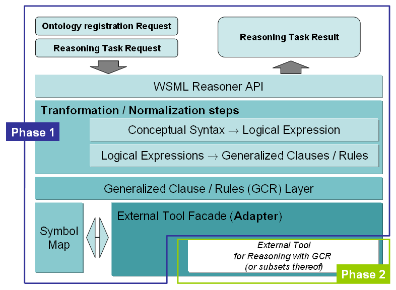
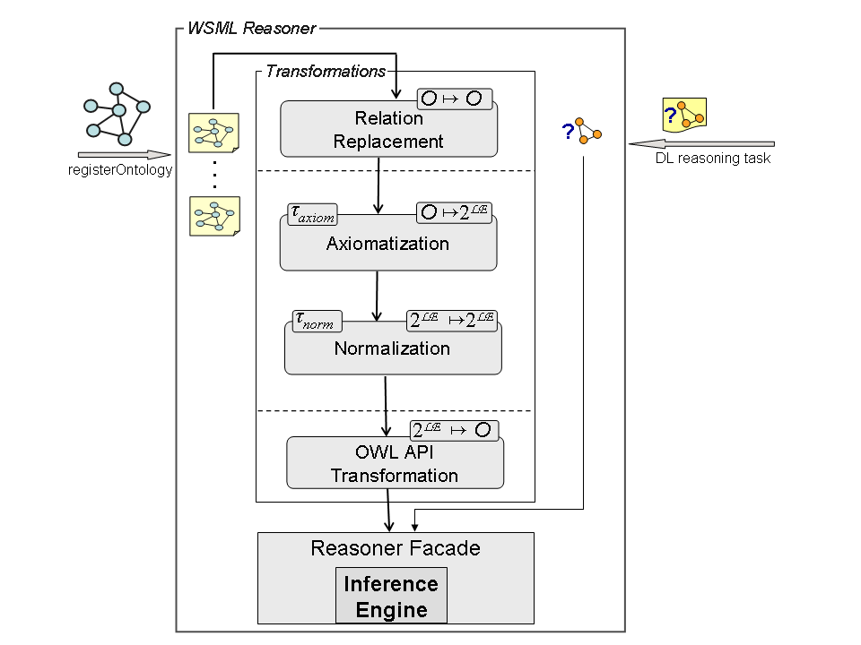

Copyright 2006 by DIP. All Rights Reserved. DIP liability, trademark, document use, and software licensing rules apply.
| IST Project Number | FP6 - 507483 | Acronym | DIP |
| Full Title | WSML-DL Reasoner | ||
| Project URL | http://dip.semanticweb.org | ||
| Document URL | http://tools.deri.org/wsml2reasoner/DIPFactSheet.html | ||
| EU Project Officer | Werner Janusch | ||
| Deliverable Number | 1.10 | Title | |
| Work package Number | 1 | Title | Ontology reasoning and querying |
| Date of Delivery | contractual | M36 | actual | 20-December-2006 |
| Status | version | 0.2 | draft | |
| Nature | ||||
| Dissemination Level | ||||
| Authors | Nathalie Steinmetz, Holger Lausen | ||||||||
| Responsible Author |
|
||||||||
| Version Log | |||
| issue date (dd-mm-yy) | revision no. | author | change |
| 21-11-06 | 001 | Holger Lausen | first internal version (version 0.1) |
| 16-12-16 | 002 | Nathalie Steinmetz | second internal version (version 0.2) |
| Reviewer Information | |||||||||
| 1 |
|
||||||||
| 2 |
|
||||||||
Version: 0.2, 25 September 2006.
Download: http://tools.deri.org/wsml2reasoner/releases/v0_2/wsml2reasoner-dl-v0_2/
Source control: Available from CVS of the DERI CVS.
The Web Service Modeling Language (WSML) is a family of formal Web languages. Its Semantic is based on Description Logics, Logic Programming and First-order Logic, with influences from F-Logic and frame-based representation systems. Conforming to the different influences, there exist five variants of WSML: WSML-Core, WSML-DL, WSML-Flight, WSML-Rule and WSML-Full.
Deliverable D1.10 provides a reasoner prototype for WSML-DL, the variant that captures the expressive Description Logic SHIQ(D). Using this prototype we can, among others, perform the reasoning tasks of checking ontology consistency, entailment and instance retrieval. It also validates WSML-DL ontologies and allows to serialize the latter to OWL DL ontologies.
The WSML2Reasoner framework Figure 1 is a flexible and higly modular architecture for easy integration of external reasoning components.

Figure 1. WSML2Reasoner framework
Instead of implementing new reasoners, existing reasoner implementations can be used for WSML through a wrapper that translates WSML expressions into the appropriate syntax for the reasoner. This wrapper contains various validation, normalization and transformation functionalities that are reusable across different WSML variants. For more details look at Ontology Transformation. We use the Wonderweb OWL API to translate WSML-DL to OWL DL.
So far, we have embedded the OWL DL reasoner Pellet as first reasoning engine in the WSML2Reasoner framework infrastructure. It is wrapped by a Pellet reasoner facade, which mediates between the OWL DL ontology produced by the transformation and the Pellet-specific internal representation. For each new DL reasoner that is integrated into the framework, such an adapter facade has to be written.
The transformation of a WSML-DL ontology to an OWL DL ontology is done in a line of
single transformation steps that are applied subsequently.
Relations to Attributes.
Replace relations, subrelations and relation instances by attributes and axioms, according
to the preprocessing steps described in [ReasWSMLDL].
Axiomatization.
All conceptual elements (except relations) are converted into appropriate axioms specified
by logical expressions. The resulting set of logical expressions is equivalent to the
original WSML ontology.
Implication Reduction Rules.
Replace equivalences and right-implications in logical expressions by left-implications.
InverseImplication Reduction Rules.
Replace conjunctions on the left side and disjunctions on the right side of an inverse
implication by left implications.
Molecule Decomposition Rules.
Replace complex molecules inside a logical expression by conjunctions of simple ones.
Figure 2 shows a detailed perspective on the transformation steps for the WSML-DL variant. It also emphasizes the highly modular internal architecture of the WSML-DL compononent of the WSML2Reasoner framework.

Figure 2. Internal framework architecture
In Description Logics, there are different basic reasoning tasks for reasoning with TBoxes or ABoxes, the two parts of DL knowledge bases. TBoxes contain the terminological knowledge of a knowledge base, e.g. concept definitions. ABoxes contain assertional knowledge, which is knowledge about the individuals of a domain. As described in [DLHandBook], the main inference procedures with TBoxes are Concept subsumption and Concept satisfiability. With ABoxes, the main reasoning tasks are ABox consistency and Instance checking.
The OWL community focuses on entailment and query answering as the key inference services. Entailment can be reduced to satisfiability, while query answering amounts to compute the result of a query over a database, or an ABox respectively.
In [ReasWSMLDL] and [DLHandBook] you will find an descriptions of the main standard reasoning tasks as described above, as well as of some main non-standard inference tasks.
The following are the reasoning tasks that are supported by the WSML-DL Reasoner prototype:
Nature: A Java library without user interface.
Interfaces (API, Web Services): a Java API.
Platform: JDK 1.5.
Supported standards:
Required Libraries:
This library is free software; you can redistribute it and/or modify it under the terms of the GNU Lesser General Public License as published by the Free Software Foundation; either version 2.1 of the License, or (at your option) any later version. This library is distributed in the hope that it will be useful, but WITHOUT ANY WARRANTY; without even the implied warranty of MERCHANTABILITY or FITNESS FOR A PARTICULAR PURPOSE. See the GNU Lesser General Public License for more details. You should have received a copy of the GNU Lesser General Public License along with this library; if not, write to the Free Software Foundation, Inc., 59 Temple Place, Suite 330, Boston, MA 02111-1307 USA.
Licensing of third party libraries and components required for the WSML-DL Reasoner component of WSML2Reasoner:
wsml2reasoner-dl-v0_2.jar - the WSML2Reasoner framework provided
as a Java library.lib folder - contains all the required libraries (jar files);wsml2reasoner-dl-src-v0_2.zip - contains all source files;api.jar and
impl.jar from the owl-api-econn folder (within the lib and then the
owl-api folder).
src\example folder.
DLReasonerExample - parsing an WSML-DL ontology, validating it
and transforming it into an OWL DL ontology. This OWL DL ontology is registered
at the Pellet reasoner facade and is used for executing different reasoning tasks.[DLHandBook] Franz Baader, Diego Calvanese, Deborah L. McGuinness, Daniele Nardi, Peter F. Patel-Schneider: The Description Logic Handbook. 2003. Cambridge University Press. 0-521-78176-0.
[OWL] McGuinness, D. et al. (2004). OWL Web Ontology Language. W3C Recommendation, http://www.w3.org/TR/owl-features/
[ReasWSMLDL] Uwe Keller, Cristina Feier, Nathalie Steinmetz, Holger Lausen: Report on reasoning techniques and prototype implementation for the WSML-Core and WSML-DL languages. Deliverable d1.2 v1.0, RW2, 2006. http://rw2.deri.at/pub/d1.2.pdf
[WSML0.2] J. de Bruijn, H. Lausen , R. Krummenacher, A. Polleres, L. Predoiu, M. Kifer, D Fensel: The Web Service Modeling Language WSML. Deliverable d16.1v0.2, WSML, 2005. http://www.wsmo.org/TR/d16/d16.1/v0.2/
$Date: 2006-12-16 21:06:56 $